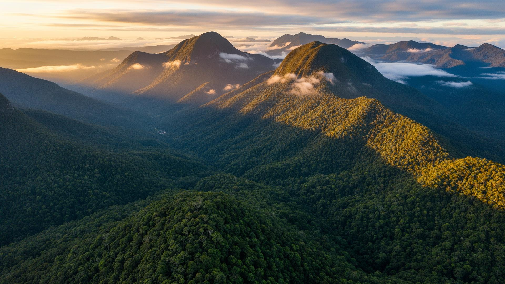
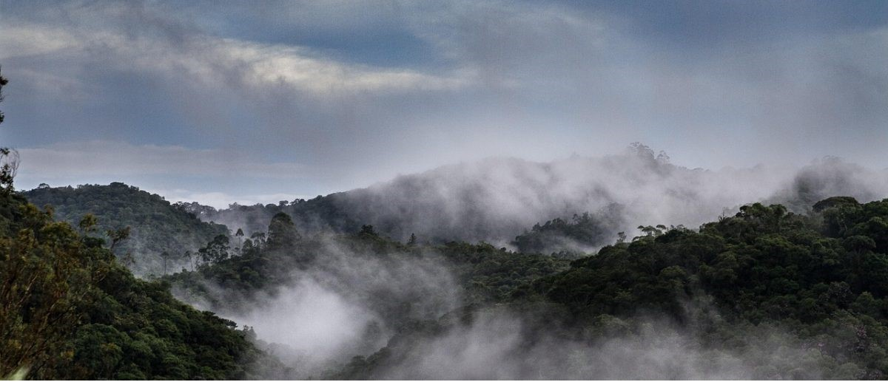
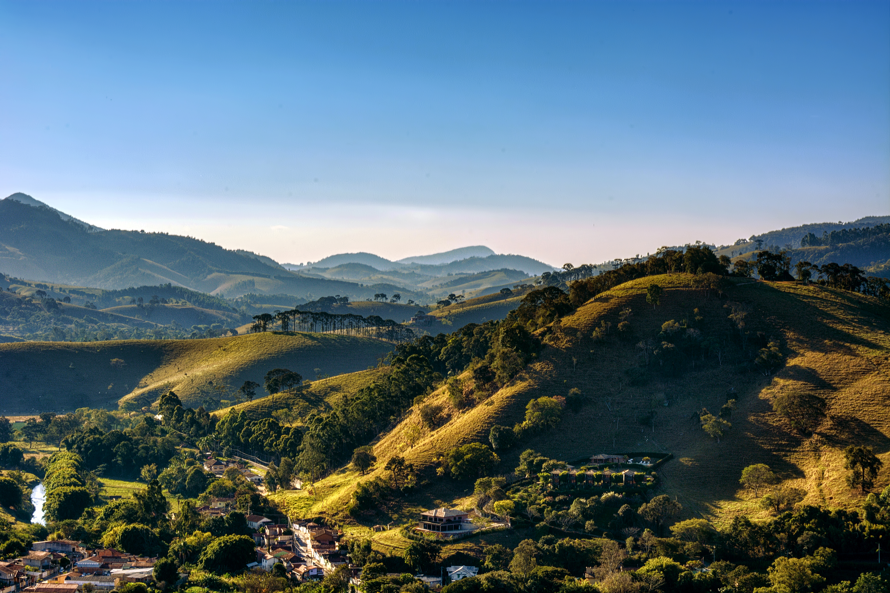
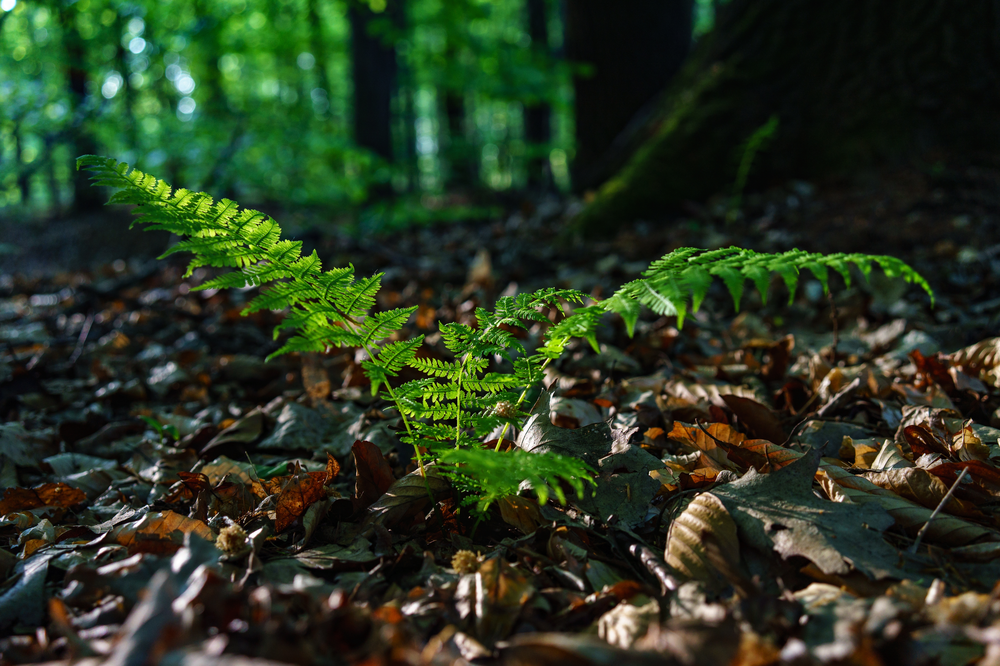
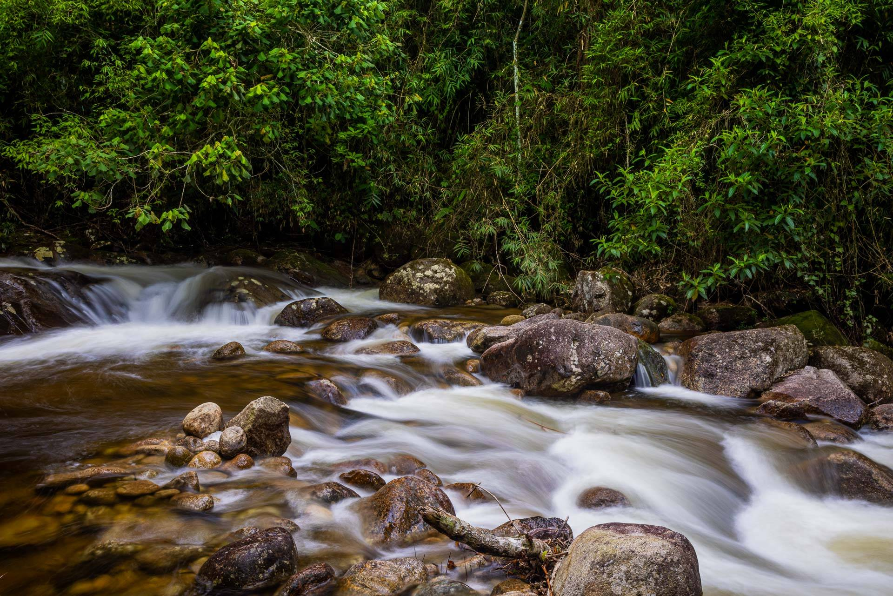
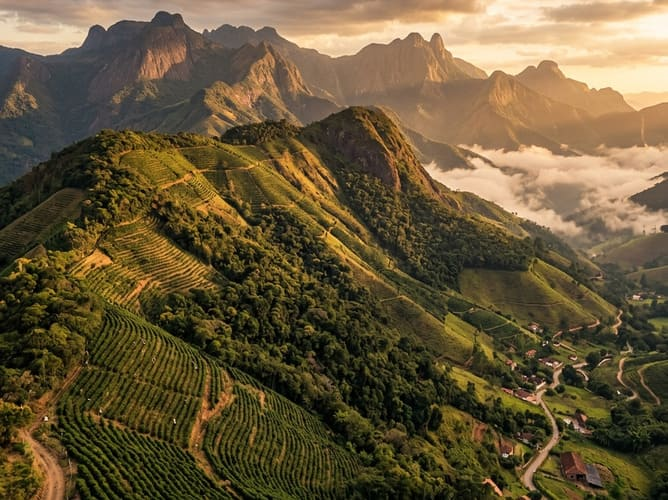
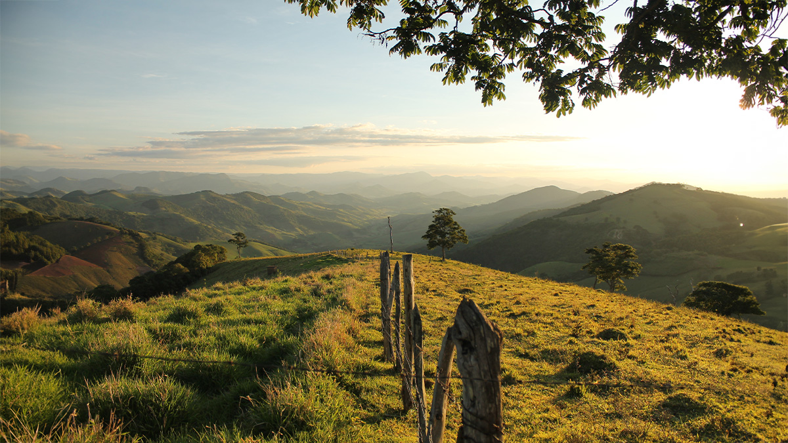

Um mergulho no universo dos Mares de Morros: conheça uma das paisagens mais exuberantes e importantes do território brasileiro.
área estimada do domínio
índice pluviométrico
mata original que resta
SOBRE O DOMÍNIO
Mares de Morros é um domínio morfoclimático brasileiro localizado ao longo do litoral leste do país, compreendendo, também, áreas no interior da região Sudeste. Estende-se por 650 mil quilômetros quadrados e recebe esse nome em função do seu relevo que é formado por um extenso conjunto de morros de topo arredondado, como meias-laranjas.
Por isso, é chamado também de relevo de meia-laranja ou relevo mamelonar. Apresenta clima tropical, variando entre o típico, o atlântico e o de altitude, e subtropical, marcados pela pluviosidade elevada. Esse aspecto favorece a vegetação florestal, típica da Mata Atlântica, e a manutenção dos cursos d’água que banham esse domínio morfoclimático.

ABRANGE TODO O LITORAL LESTE BRASILEIRO E AVANÇA PARA O INTERIOR DA REGIÃO SUDESTE
ESPÍRITO SANTO, RIO DE JANEIRO, SÃO PAULO, MINAS GERAIS E OUTROS ESTADOS COSTEIROS
ENVOLVE IMPORTANTES SERRAS E PLANALTOS, COMO A SERRA DO MAR E A SERRA DA MANTIQUEIRA
SOBRE O DOMÍNIO
Um domínio morfoclimático é uma grande região geográfica definida pela interação e integração entre vários elementos naturais da paisagem.

ATMOSFERA
O domínio apresenta variações climáticas regionais, embora a umidade seja uma marca constante.
•Tropical Atlântico: Predominante, com médias de 22 °C e chuvas abundantes (1.500 a 2.000 mm/ano).
•Tropical Típico: Verão quente e chuvoso e inverno ameno e seco.
•Tropical de Altitude: Médias próximas de 20 °C e possibilidade de geadas.
•Subtropical Úmido: Estações bem definidas e chuvas distribuídas ao longo do ano.

GEOMORFOLOGIA
O domínio apresenta relevo ondulado e acidentado, marcado por morros com topos arredondados que lembram ondas no mar.
•Forma mamelonar: Relevo caracterizado por morros de altitudes medianas com topos arredondados, conhecidos popularmente como "meias-laranjas".
•Estrutura geológica: Esculpido sobre rochas antigas do escudo cristalino brasileiro.
•Serras e Planícies: Inclui feições de serras como a Serra do Mar e a Serra da Mantiqueira e planícies litorâneas nas faixas rebaixadas junto ao mar.
•Altitudes: Variam predominantemente entre 10 e 1.300 metros.

FLORA
A vegetação predominante no domínio dos Mares de Morros é a Mata Atlântica, caracterizada por árvores de folhas largas e grande biodiversidade.
•Mata Atlântica: Cobertura vegetal dominante, variando entre florestas ombrófilas (sempre verdes e muito úmidas) e estacionais (que perdem folhas no período seco).
•Ecossistemas Litorâneos: Presença de vegetação arbustiva e herbácea de restinga e de manguezais nas faixas de transição entre o continente e o oceano.
•Nível de preservação: É o bioma mais devastado do país, reduzido a menos de 25% de sua cobertura florestal original.

HIDROSFERA
A hidrografia do domínio dos Mares de Morros caracteriza-se pela abundância de água, forte influência do relevo acidentado e sérios problemas ambientais.
•Importância O domínio abriga ou intercepta trechos de bacias hidrográficas fundamentais para o abastecimento urbano, navegação e geração de energia.
•Bacias integrantes: Atlântico Nordeste Oriental, Atlântico Leste, São Francisco, Atlântico Sudeste, Paraná e Atlântico Sul.
•Rios principais: São Francisco, Paraíba do Sul, Tietê, Doce e Rio Grande.

PEDOLOGIA
O domínio apresenta solos profundos, ricos em minerais, porém muito propensos à lixiviação e à erosão devido ao relevo acidentado e ao clima úmido.
•Grau de intemperismo: Solos profundamente alterados pela ação continuada do calor e da água.
•Latossolos (Predominantes): Vermelhos e amarelos, muito profundos, bem estruturados e de fácil infiltração de água, porém com baixa fertilidade natural, exigindo correção de nutrientes para agricultura.
•Outros tipos: Argissolos (de textura mais argilosa) e solos rasos/incipientes em áreas de encostas íngremes, como os Cambissolos.
BIODIVERSIDADE
A fauna do domínio apresenta grande biodiversidade, alto endemismo e grande vulnerabilidade devido ao desmatamento.
Mamíferos
•Mico-leão-dourado
•Tamanduá-bandeira
•Onça-pintada
Aves
•Arara-azul-pequena
•Jacutinga
•Tucano-de-bico-preto
Fauna aquática
•Bagres
•Lambaris
•Peixe-faca
SOBRE O DOMÍNIO
O domínio morfoclimático dos Mares de Morros enfrenta intensa degradação socioambiental impulsionada pelo desmatamento histórico, urbanização acelerada e uso inadequado do solo.
SOBRE O DOMÍNIO
O domínio dos Mares de Morros passou por profundas transformações ao longo dos séculos, principalmente devido à ação humana. Originalmente, grande parte de sua extensão era coberta pela Mata Atlântica, que apresentava uma enorme diversidade de espécies animais e vegetais. Entretanto, a expansão da agricultura, a exploração de madeira, a mineração e o crescimento das cidades reduziram significativamente a vegetação nativa.
A urbanização e a industrialização também modificaram a paisagem, especialmente nas regiões próximas ao litoral, onde se concentra grande parte da população brasileira. Como consequência, ocorreram o desmatamento, a fragmentação dos habitats, a perda de biodiversidade, a poluição dos rios e o aumento da erosão do solo. Em áreas de relevo acidentado, a ocupação irregular das encostas ainda intensifica o risco de deslizamentos.
Atualmente, restam fragmentos da Mata Atlântica, e iniciativas de preservação, reflorestamento e recuperação de áreas degradadas buscam reduzir esses impactos. Assim, a conservação desse domínio é fundamental para proteger sua biodiversidade, seus recursos hídricos e o equilíbrio ambiental.

PARTICIPANTES
Camille Veloso
Gabriel Moura
Maryane Mendes
Miqueias Ribeiro
Sophia Silva
SAIBA MAIS
Sobre
Localização
Características
Problemas Socioambientais
Mudanças
FALE CONOSCO
R. Ribeirão Preto, 75
Jardim Pedroso, Mauá – SP
(11) 99835-9149
e128acad@cps.sp.gov.br
© 2026 - Grupo 5